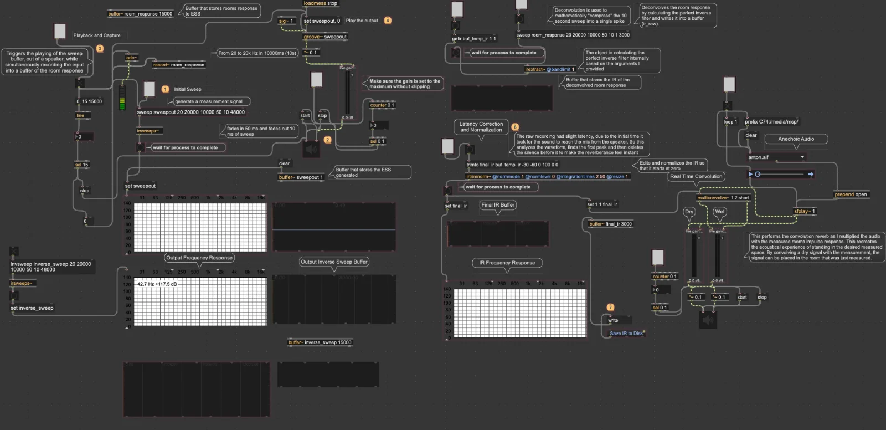
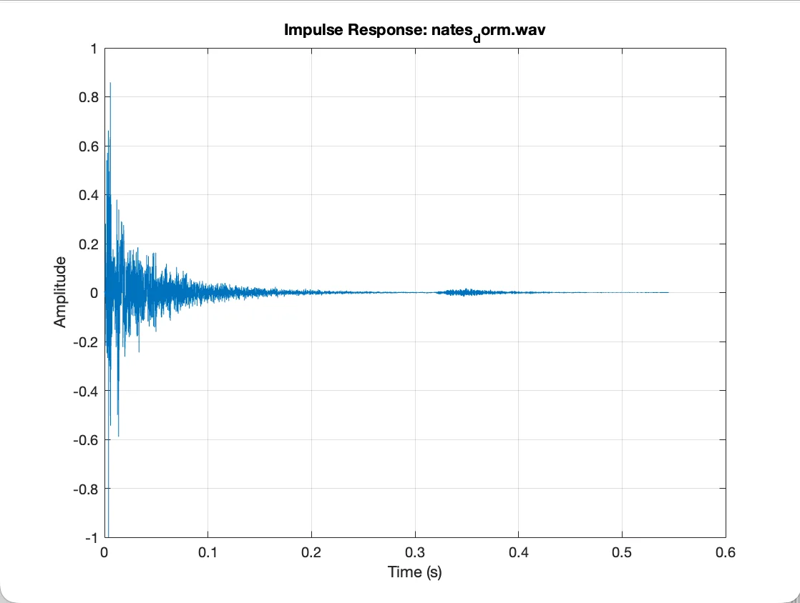
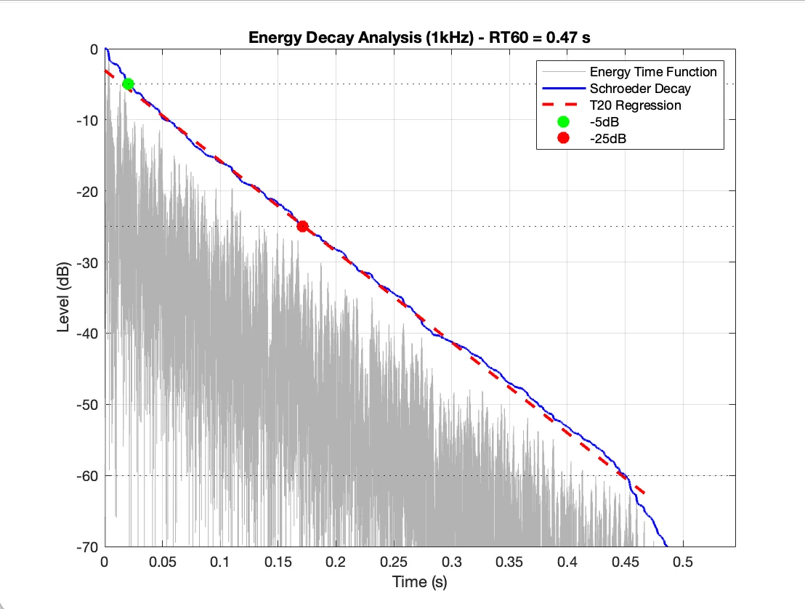
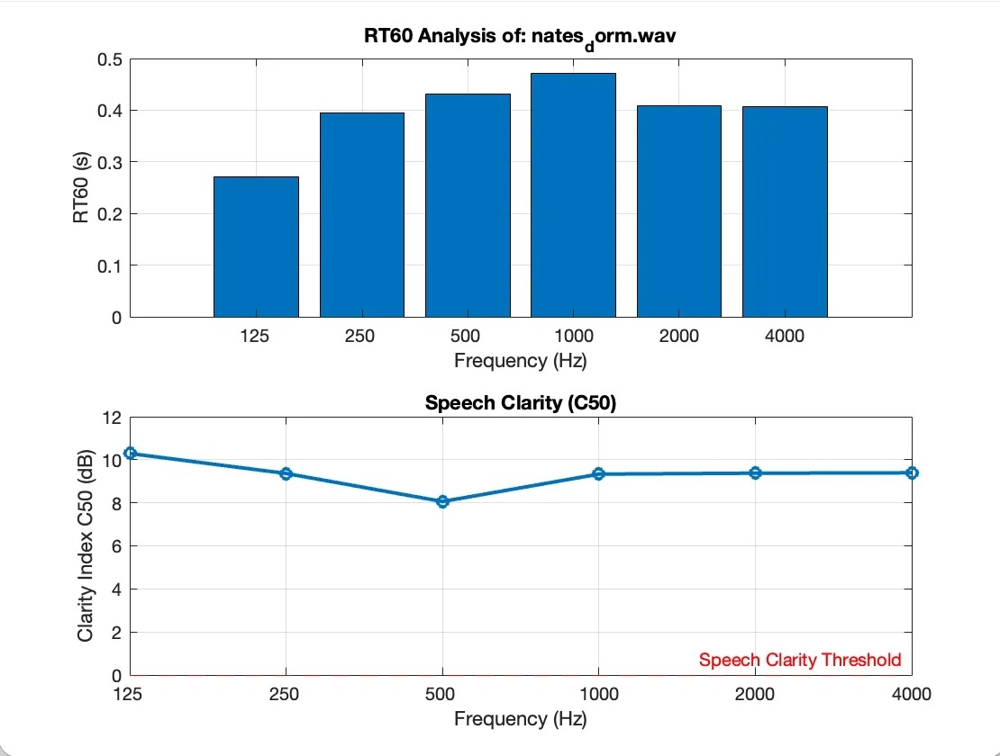
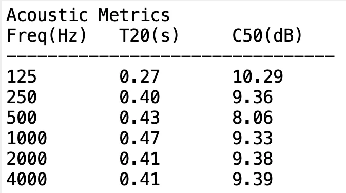

Problem
Architectural acoustics relies on the ability to measure how a room responds to sound. The Room Impulse Response (IR), the acoustic fingerprint of a space, tells us everything about a room's reflections, absorption, and decay. From the IR, we can derive metrics like reverberation time and speech clarity that determine whether a room is suitable for concerts, lectures, or conversation.
Capturing a high-quality IR and extracting useful acoustic data from it requires a methodical chain of steps: generating a test signal, recording the room's response, deconvolving the recording to isolate the IR, filtering into octave bands, computing energy decay curves in each frequency band, and fitting regression lines to extract standardized metrics.
I wanted to build the entire pipeline from scratch, from the signal generation through analysis, to develop a deeper understanding of how room acoustic measurements actually work, and to create a tool I could use for real measurements of performance spaces.
Method
The system has two components: a MaxMSP application that handles measurement (signal generation, IR capture, and auralization), and a MATLAB script that processes captured IRs and computes acoustic metrics. Both are single, self-contained files.

Signal Generation
Traditional acoustic measurements used impulsive sounds like balloon pops. These are loud but spectrally uncontrolled. Instead, I used a generated Exponential Sine Sweep (ESS), a tone that sweeps from 20 Hz to 20 kHz over 10 seconds. The exponential (logarithmic) sweep spends equal time in every octave, which gives more energy into the low frequencies where room modes are hardest to excite. This yields a far superior signal-to-noise ratio (SNR) compared to impulsive methods.
The sweep is generated using the irsweeps~ object from the HISS Tools library (Huddersfield Impulse Response Toolbox).
Capture and Deconvolution
The sweep plays through the source into the room while the measurement microphone simultaneously records the room's response into a 15-second buffer (the extra 5 seconds captures the full reverb tail after the sweep ends). The irextract~ object then performs deconvolution, which effectively divides the recorded signal by the original sweep in the frequency domain, which mathematically isolates the room's impulse response. The @bandlimit 1 argument restricts the operation to the 20 Hz–20 kHz range, preventing division-by-zero artifacts at DC.
Latency Correction
The raw deconvolved IR contains a gap of silence at the beginning, which is the time-of-flight latency from speaker to microphone. The irtrimnorm~ object automates the cleanup: using a 2 ms integration window, it scans for the moment energy exceeds -30 dB, trims everything before that point (shifting the direct sound arrival to sample 0), crops the tail at -60 dB, and normalizes the output.
Real-Time Auralization
Once the IR is captured and cleaned, it's loaded into multiconvolve~ operating in short mode, a non-uniform partitioned convolution algorithm. Standard convolution would introduce a processing delay equal to the full length of the IR, making real-time listening impossible. Partitioned convolution solves this by slicing the beginning of the IR into tiny blocks for instant processing while leaving the reverb tail in larger blocks to save CPU. The result is zero-latency convolution: I can play a dry recording of a trumpet or cello through the mathematical model of the measured room and hear it as if it were being performed in that space, in real time.
Hardware Setup
ISO 3382 specifies an omnidirectional sound source (otherwise known as a dodecahedron speaker) to excite the room uniformly in all directions. I used a standard directional studio monitor, compensating for its focused output pattern with a technique called corner loading, where the speaker was directed into a corner of the room. The acoustic energy reflects and scatters immediately off three surfaces, attempting to replicate the wide 360° dispersion pattern needed to excite room modes evenly.
The measurement microphone was omnidirectional, placed at a listening position away from walls to minimize proximity effects from strong early reflections.
MATLAB
A MATLAB script processes the captured IR and outputs acoustic metrics (RT60/C50) across octave bands (125 Hz – 4 kHz).
Octave Band Filtering
The IR is split into octave bands using 3rd-order Butterworth bandpass filters, with lower and upper cutoffs at fc/√2 and fc×√2 respectively. Butterworth was chosen for its maximally flat magnitude response in the passband as it doesn't introduce amplitude errors that would distort the energy calculations downstream.
Schroeder Backward Integration
For each octave band, the filtered IR is squared to get the energy function, then backward-integrated using Schroeder's method (a reversed cumulative sum). This transforms the jagged IR decay into a smooth Energy Decay Curve (EDC) from which regression lines can be fitted.
Reverberation Time
The script calculates RT60 using the T20 method per ISO 3382. A linear regression is fitted to the Schroeder decay curve between the -5 dB and -25 dB marks, and the resulting slope is extracted to predict a full 60 dB decay. The -5 to -25 dB window is used to avoid both the direct sound arrival (above -5 dB) and the noise floor (below -25 dB) which is critical in a small room where the noise floor is relatively high.
Speech Clarity (C50)
The C50 Clarity Index is calculated as the ratio of early energy (within the first 50 ms) to late energy (the remaining reverb tail), expressed in dB. The 50 ms boundary is significant as the reflections arriving within that window reinforce the direct sound and help with intelligibility, while reflections arriving later effectively blur the signal. Values above 0 dB indicate the space favors speech clarity, and values below 0 dB indicate a more reverberant character suited to music.
Dorm Room Analysis
The script generates three figures from the captured impulse response of my dorm room:




Result
The system successfully captured a clean impulse response of my dorm room and living room, with the MATLAB analysis producing plausible results for a small, furnished space: short reverberation times (around 0.3–0.5 seconds at mid-frequencies) and positive C50 values indicating good speech clarity, which is what you'd expect from a small room with soft furnishings.
The real-time auralization component works as intended, as dry recordings convolved with the measured IR produce a sense of the room's acoustic character.
The next phase of the project is a planned measurement of Northeastern's Fenway Center performance hall in April 2026, with Dr. Ronald Smith. Fenway Center will present itself as a different acoustic environment with larger volume, longer reverberation, and more complex behavior. It will serve as the system's first application to a real performance space.
Future improvements include additional metrics (EDT, C80, D50) and the use of a true dodecahedron speaker for correct excitation